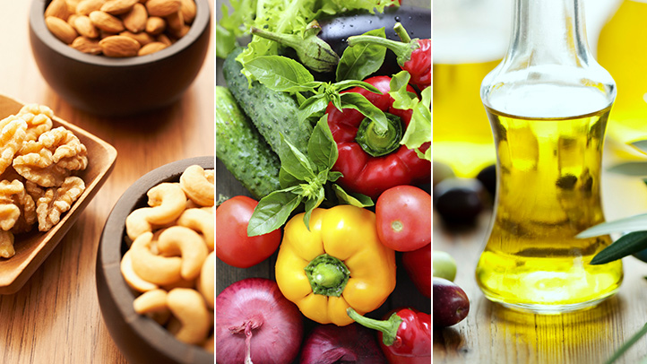

Chart For Balanced Diet
Vitamins and Minerals
These micronutrients support metabolism, nerve and muscle function, bone maintenance and cell production. Fruits and vegetables are the primary sources of vitamins and minerals including potassium, dietary fiber, folate (folic acid), vitamin A, and vitamin C. Simple carbohydrates like glucose and fructose are also found in fruits and vegetables. Similarly, vegetables such as dark green leafy veggies should be included in your meal. Adding a variety of veggies like broccoli, spinach, beans, lettuce, etc to your meal will help you in getting the bountiful nutrients required for the body.
2. Protein
Protein is required to help your body repair cells and make new ones. Protein is also important for growth and development during the early stages of childhood, adolescence, and pregnancy. About 30 to 35% of your daily diet should consist of protein found in pulses like whole grams, dals, chickpeas, peas, lentils, beans, peanuts, milk, eggs, fish, and meat.
4. Fats
Fats provide energy, store and provide vitamins, and synthesize hormones. There are three kinds of fats namely, polyunsaturated such as walnuts, flax seeds, etc; monounsaturated fat such as olive oil and omega-3 fatty acids such as fish oil, walnuts, etc. Oil is one of the main ingredient used in cooking. Vegetable oil is the main villain used in cooking as it contains fat that is harmful for the body. Instead, you can go for unrefined or cold pressed oil which has a higher nutritional value than the unrefined oil.
Ways to Maintain DIET Chart